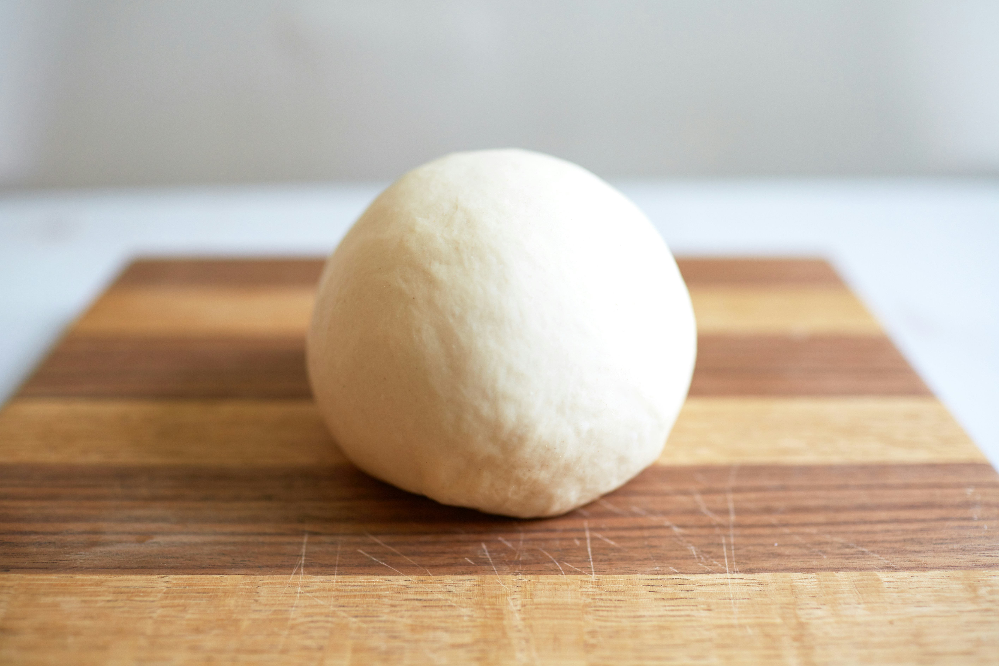
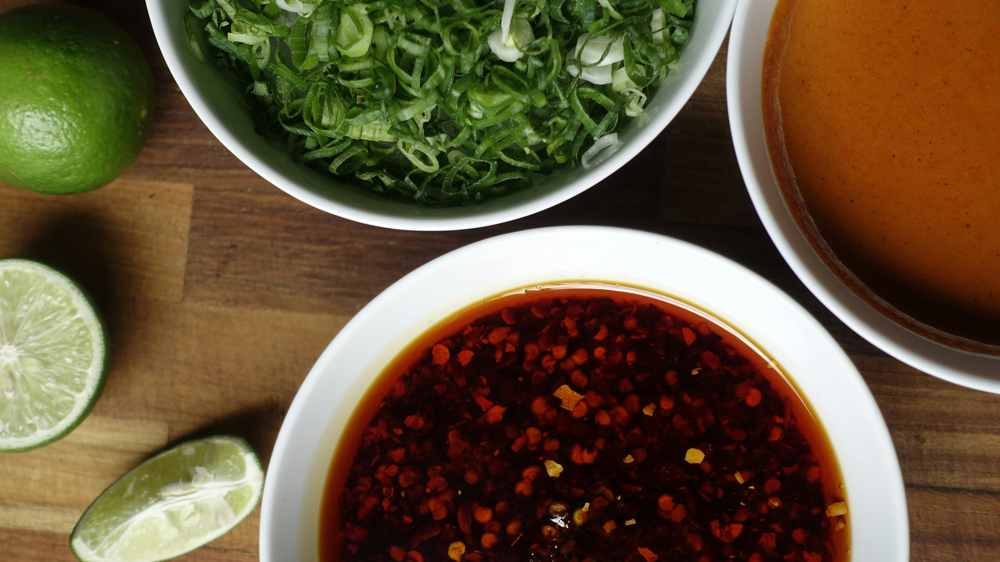

Main Components:
Dumpling Wrapper Dough
First we will start from making dough for our dumpling wrappers. If you have pre-made wrapperes you can skip this step.

Ingredients:
- 1 cup All Purpose flour
- 1 tsp salt
- Luke warm water or Chicken stock
Instructions:
- Add flour in big bowl.
- Add salt and mix it.
- Start by adding little water at a time and knead it until it turns into a firm dough.
- Let it rest for 20-30 mins.
- Cut it into small circle shapes.
Dumpling Filling
Now we will make most important part of dumplings its filling.

Ingredients:
- 1 kg Potatoes
- 2-3 small carrots
- 1 small cabbage
- Half kg chicken
- Salt
- Black pepper powder
- Red chilli flakes
- Vinegar and Soy sauce
- Cumin Seeds
- Cooking oil
Instructions:
- Chop your carrots and cabbage.
- Heat up 1 tbsp oil in a wok.
- Add 1 tsp cumin seeds and 1 tsp chilli flakes.
- Add chopped veggies.
- Add salt, soy sauce and vinegar to taste.
- Stir fry for 10-15 mins then take it off the stove and let it cool down.
- Peel and cut your potatoes.
- Wash your chicken and potatoes.
- Now boil them till soft.
- Mash your potatoes and shred your chicken.
- Add stir fried vegetables, mashed potatoes and chicken in a bowl.
- Add salt, black pepper powder and chilli flakes to your taste.
- Mix it properly.
- Once done bring out your dumpling wrappers.
- lay wrapper flat add a tbsp of filling in the center.
- Wet the corners using water and make the shape of dumpling.
How to Cook Dumplings?
Lets see how to cook your dumplings.
Instructions:
- Steam dumplings in a steamer.
- If you don't have a steamer take a big pot add water and put a small pot upside down.
- Oil your steamer plate and put 7-8 dumplings on it.
- Once water starts boiling in the pot put steamer plate on the small pot in the bigger pot.
- Wait 10-15 mins or till dumplings are properly cooked and take it out.
- Add oil in a frying pan.
- Pan fry your dumplings till it gets a golden brown bottom
Dumpling Sauce or Chilli Oil
Lets go through steps to make chilli oil for dipping your dumplings.

Ingredients:
- Chilli Flakes
- Cooking Oil
- Cumin Seeds
- Crushed Garlic
Instruction:
- Take a pan add oil into it and let it get hot.
- Add crushed garlic, chilli flakes and cumin seeds in a heat resistant bowl.
- Once oil is hot enough pour it into the bowl with spices.
- Serve it with your dumplings and Enjoy!!